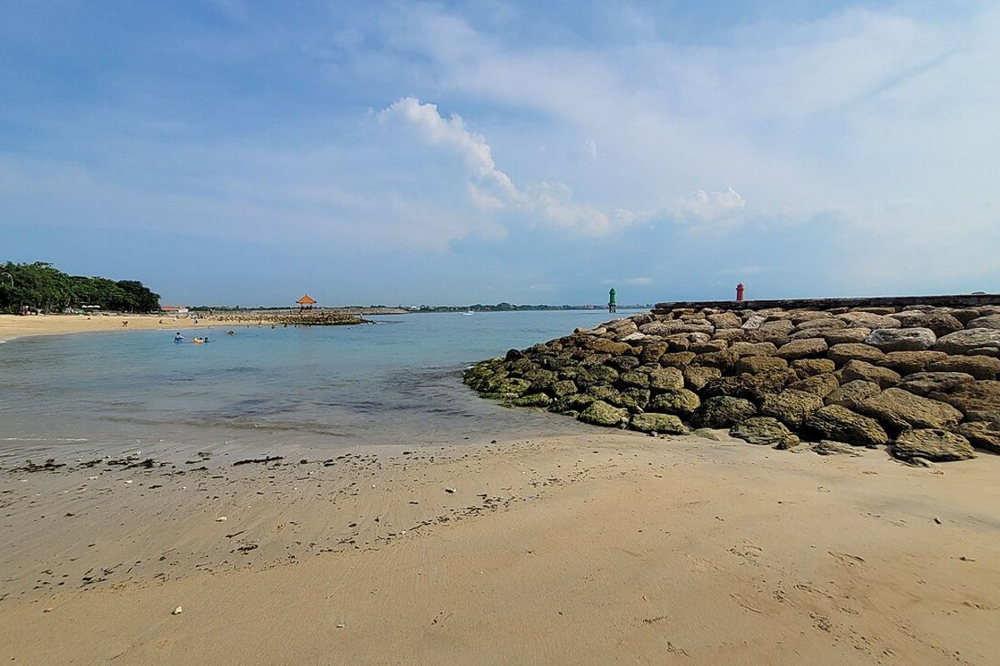
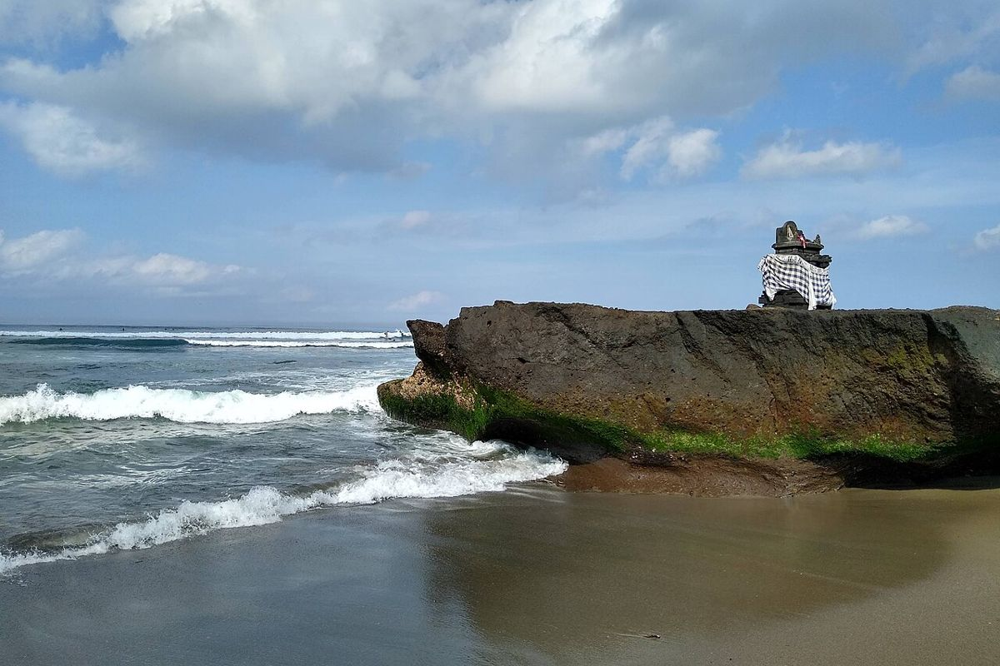
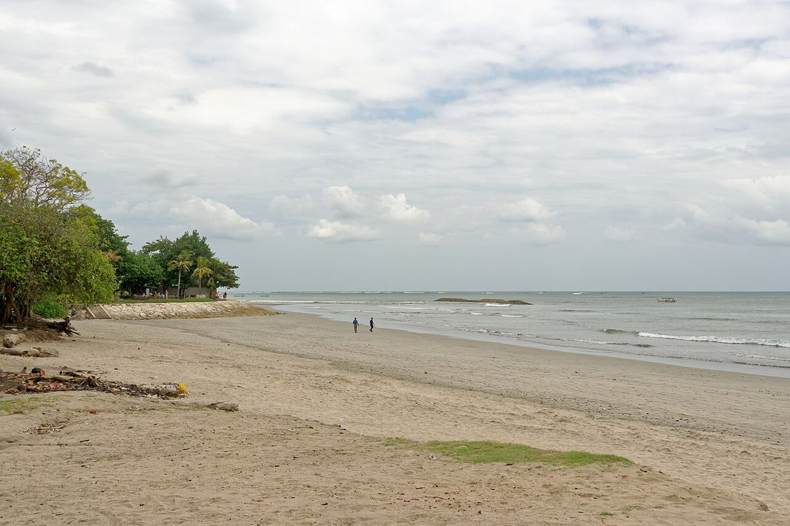
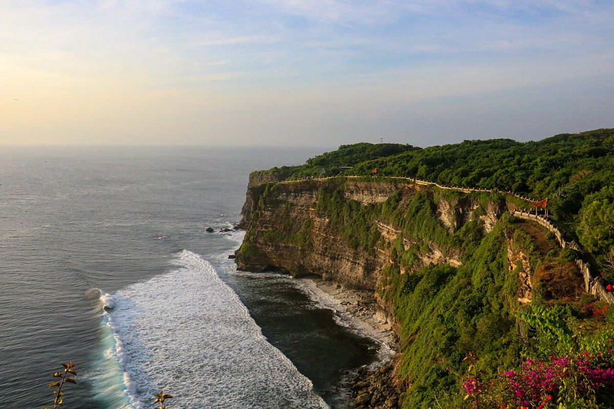
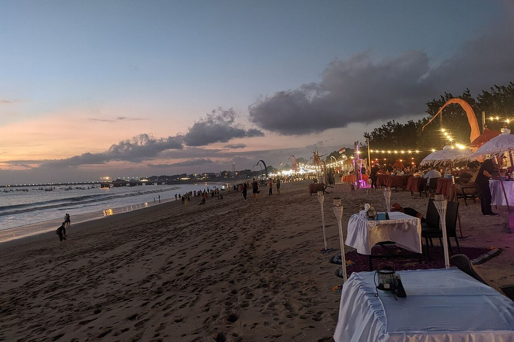
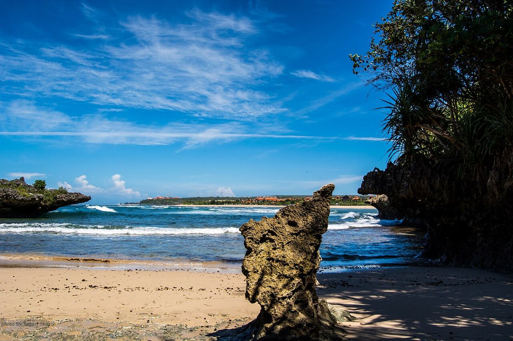

Trusted nannies for your family holiday in Bali
English-speaking, first-aid trained babysitters who come to your hotel or villa — so you can enjoy dinner, the spa or a quiet sunrise.
- Vetted in person
- Meet your nanny first
- Replacement guarantee
- Pay after the session
Care that fits your trip
From a single evening to a full season in Bali.

Hourly babysitter
Dinner out, spa, a surf lesson — from 3 hours.

Full-day nanny
Beach, pool, naps and meals while you get a real holiday.

Night nanny
Settling, feeds and night wakings so you can sleep.

Newborn & baby care
Nannies experienced with babies under 12 months.

Travel nanny
Joins your family on day trips and island hops.

Hotel & villa babysitting
We come to your hotel or villa across Bali.

Weddings & events
Kids' corner and sitters for celebrations.

Long-term nanny
For expat families living in Bali.
Booked in three messages
Message us on WhatsApp
Tell us dates, hours, kids' ages and where you're staying.
Meet your nanny
We send a profile and a short intro. Want a video call first? Just ask.
Enjoy your time
She arrives at your hotel or villa. Photo updates on WhatsApp, pay after the session.
Where we work in Bali
Our nannies come to hotels, villas and homes across South Bali and Ubud.

SanurCalm, reef-protected water and a flat beachfront path make Sanur the easiest part of Bali for babies and toddlers.
CangguSurf, cafes and villas with private pools — Canggu suits families who want an active, social Bali stay. SeminyakBoutique villas, beach clubs and restaurants — Seminyak is Bali's stylish base for families who like to go out.
SeminyakBoutique villas, beach clubs and restaurants — Seminyak is Bali's stylish base for families who like to go out.
Kuta & LegianClose to the airport and Waterbom, Kuta and Legian are an easy first stop for families arriving in Bali.UbudRice terraces, jungle villas and cooler air — Ubud is Bali's cultural heart and a gentle place for kids.
UluwatuClifftop resorts, famous sunsets and hidden beaches — Uluwatu is Bali at its most dramatic.
JimbaranA wide, calm bay with seafood dinners on the sand — and just 15 minutes from the airport.
Nusa DuaManicured resorts, calm reef-sheltered beaches and kids' clubs — Nusa Dua is Bali's classic family resort area.DenpasarBali's capital, where many expat and local families live close to international hospitals and schools.Meet your nanny before she arrives
No strangers at your door. Before the booking is confirmed you get:
- Her photo, name and years of experience
- Languages she speaks and ages she's best with
- A short video hello on WhatsApp
- A quick video call if you'd like one
7 years · babies & toddlers
🗣 English · Bahasa
💛 Loves: swimming, drawing, songs
How we vet every nanny
Six steps before a nanny meets her first family. No shortcuts.
ID & address check
Passport or KTP verified, home address confirmed.
Two family references
We call previous families ourselves — not just read letters.
In-person interview
Face to face, with childcare scenarios and English check.
Paediatric first aid & CPR
Valid certificate, renewed on schedule. We can show it to you.
Water-safety rules
Pool and beach supervision rules signed by every nanny.
Trial shift & feedback
First shifts reviewed; families rate every booking.
Replacement guarantee
If your nanny is ill or can't make it, we send another vetted nanny — or you don't pay. Your evening stays yours.
What your nanny brings
Kids don't just get supervised — they have fun.
Questions parents ask
How quickly can I book?
Often the same day. For evenings and peak season (July–August, Christmas) message us 2–3 days ahead.
Do your nannies speak English?
Yes — every nanny communicates comfortably in English. We tell you each nanny's level honestly.
Are nannies first-aid trained?
Every nanny holds a current paediatric first aid & CPR certificate. We can show it before your booking.
Where do you work?
Across South Bali and Ubud — Sanur, Canggu, Seminyak, Kuta, Jimbaran, Uluwatu, Nusa Dua, Denpasar and Ubud. Hotels, villas and homes.
How do I pay?
Cash (IDR) or bank transfer after the session. No deposit for single bookings.
Can a nanny look after my newborn?
Yes. We match babies with nannies who have specific newborn experience.
What if the nanny cancels?
We send a replacement nanny with the same checks. If we can't, you don't pay.
Can I see the nanny before booking?
Yes. You get her photo, experience and a short video hello, and can ask for a video call.
Sanur with kids
Local guides from people who spend every day on these beaches.
Need a nanny in Bali?
Tell us your dates — we'll reply with an available nanny.
Message us on WhatsApp